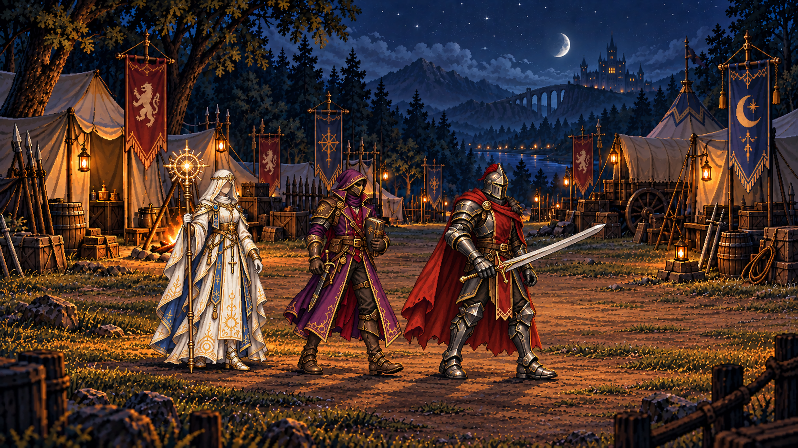

RPGThreeJS · Nouvelle étude d’animation
Le camp, image par image

01 / 18
Nouvelle base · nouvelles poses générées
Chargement des 18 dessins…
Réduction des mouvements active : feuilletage manuel disponible ; la lecture animée démarre uniquement sur votre demande.
Les 18 dessins et leur origine
Chaque image est un dessin généré depuis la nouvelle base. Cette base utilise uniquement les masters V2 et le décor canonique du camp. Aucune ancienne vidéo, image extraite ou pose du montage précédent n’est utilisée. La lecture ne comporte ni fondu, interpolation, déplacement logiciel des personnages ou réalignement du décor.